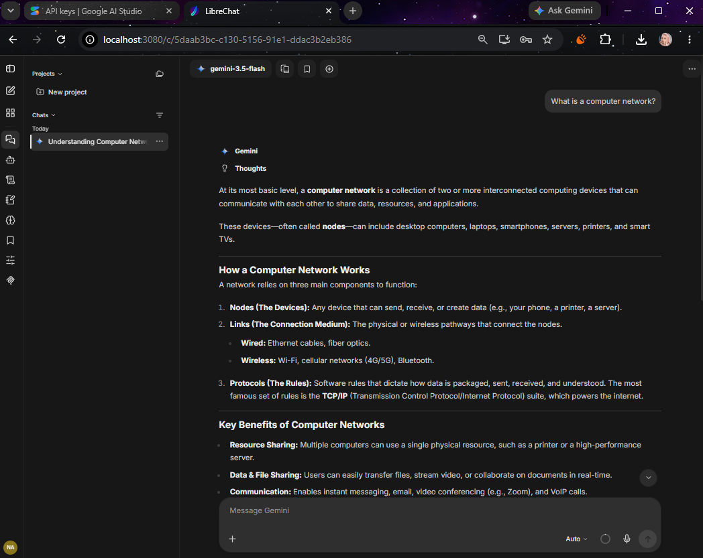
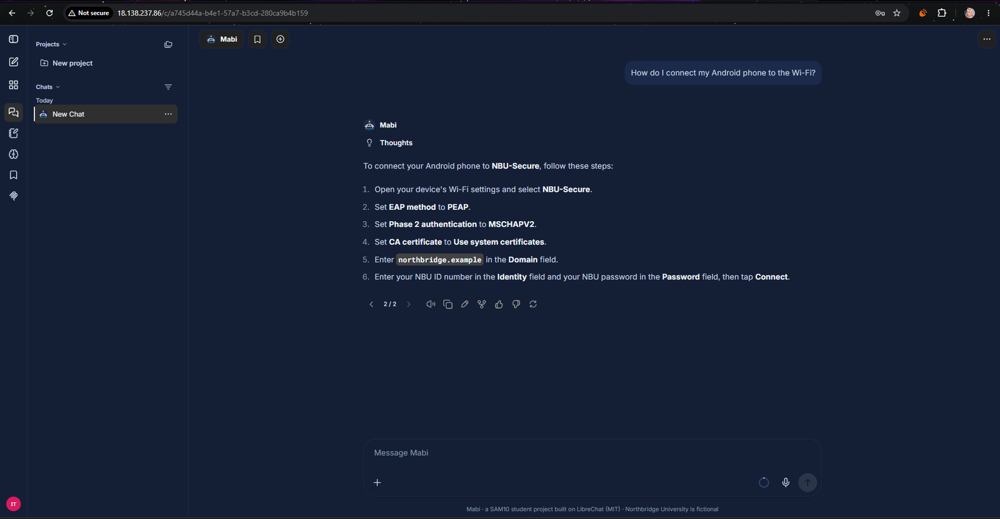
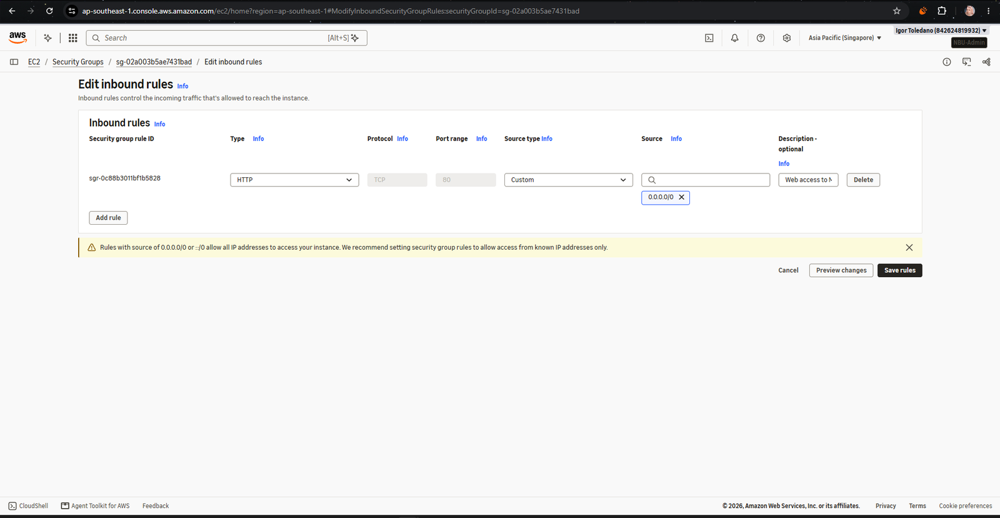

Baseline: the environment before I touched it
What "running LibreChat" looked like at the start, so the improvements have something honest to be measured against.
Stage 0: stock LibreChat on a laptop (2026-11-16)

| Area | Baseline |
|---|---|
| Availability | Only while the laptop was on and Docker Desktop running; only reachable from that laptop |
| Access | Anyone who reached it could create an account; email login, no MFA |
| Secrets | Gemini API key in plain text in .env, next to the code |
| Transport | Plain HTTP |
| Monitoring | None. No request log, no metrics, no alarms. A failure was found only by trying it |
| Logs | Container logs on the laptop only, no retention policy |
| Backups | None. Conversations lived only in a Docker folder on one laptop disk |
| Data and wording | No content of its own; a general assistant with no rules |
| Cost | $0 (own laptop, free model tier) |
Stage 1: first copy on AWS (2026-11-17, before hardening)
The first deployment worked, but it copied the laptop's habits onto the internet:

"Not secure", plain HTTP to the raw public IP of the server." loading="lazy">
0.0.0.0/0, the whole internet." loading="lazy">0.0.0.0/0, the whole internet.- HTTP only, at a raw IP address. Passwords crossed the internet unencrypted.
- Web port open to every address on the internet, so CloudFront could be bypassed.
- Sign-up still open: anyone finding the IP could make an account and spend the model quota.
- Still no monitoring, alarms, backups or request log.
The Monitoring, backup and security page shows what replaced each of these, and the Results page puts the numbers side by side.